Biblioteca do tarô
Significado das cartas do tarô
As 78 cartas, direita e invertida, no amor, no trabalho e como conselho.
Experimente agora
Tire uma carta para hoje
Respire, pense numa situação e toque na carta. Ela sai de um baralho completo, com as 78 cartas.
A sua carta
No app, a leitura fala da sua pergunta, e não só da carta.
Arcanos Maiores
As 22 cartas dos grandes temas da vida: começos, escolhas, crises, viradas e conclusões.
- O Louco
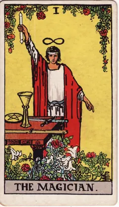
O Mago- A Sacerdotisa
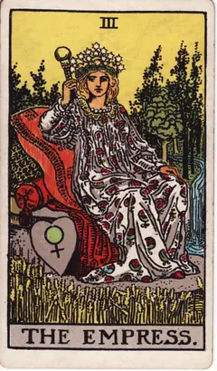
A Imperatriz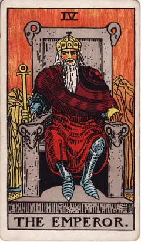
O Imperador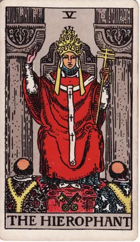
O Hierofante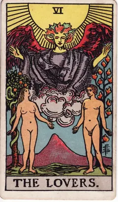
Os Amantes- O Carro
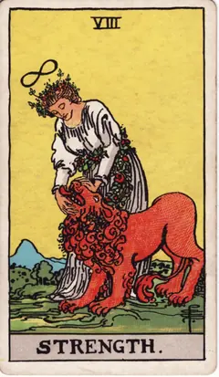
A Força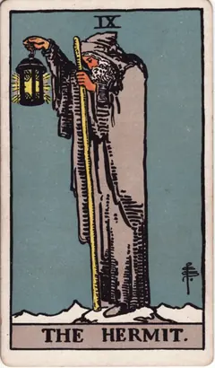
O Eremita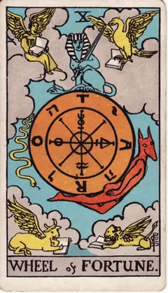
Roda da Fortuna- A Justiça
 O Enforcado
O Enforcado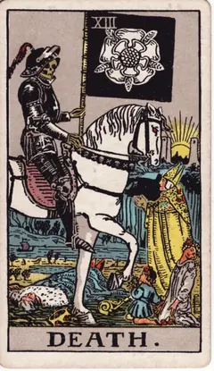
A Morte A Temperança
A Temperança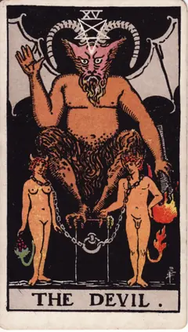
O Diabo- A Torre
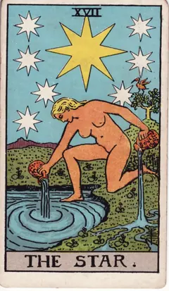
A Estrela- A Lua
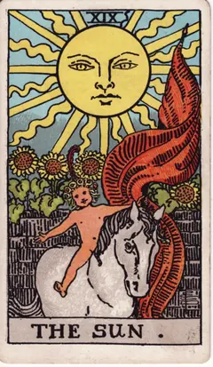
O Sol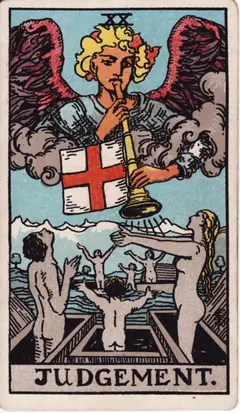
O Julgamento- O Mundo
Copas
Elemento Água. Sentimentos, relações, intuição e o que se passa no coração.
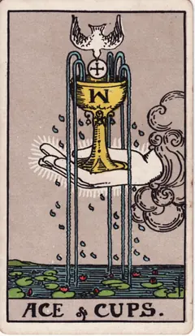
Ás de Copas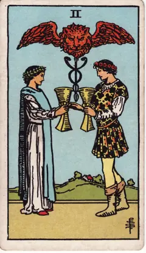
Dois de Copas- Três de Copas
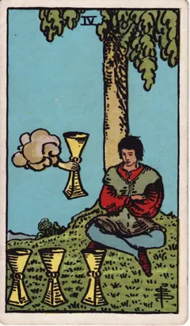
Quatro de Copas- Cinco de Copas
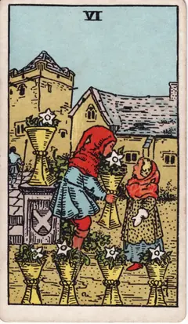
Seis de Copas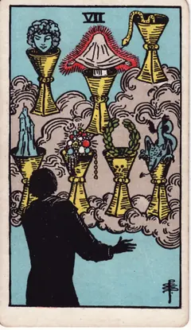
Sete de Copas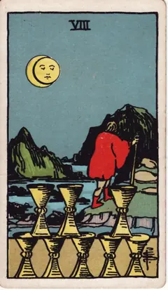
Oito de Copas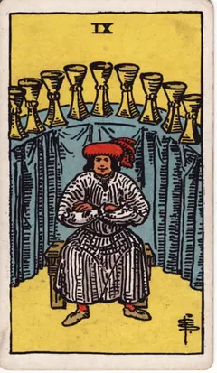
Nove de Copas- Dez de Copas
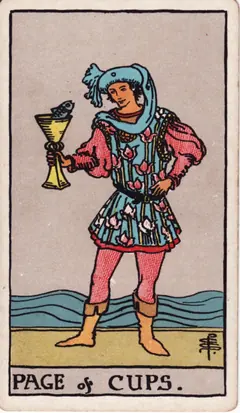
Valete de Copas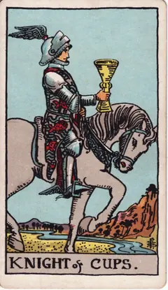
Cavaleiro de Copas- Rainha de Copas
- Rei de Copas
Espadas
Elemento Ar. Pensamentos, conflitos, decisões difíceis e a verdade dita em voz alta.
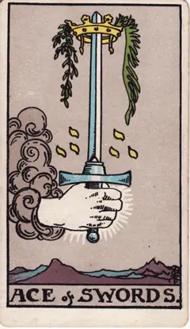
Ás de Espadas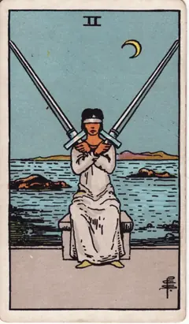
Dois de Espadas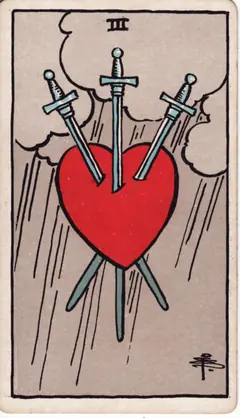
Três de Espadas- Quatro de Espadas
- Cinco de Espadas
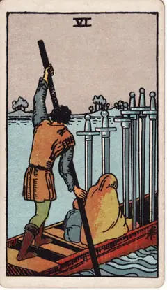
Seis de Espadas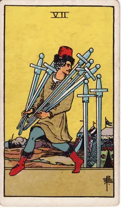
Sete de Espadas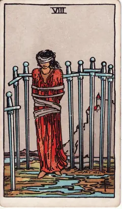
Oito de Espadas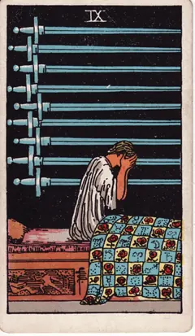
Nove de Espadas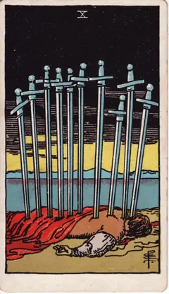
Dez de Espadas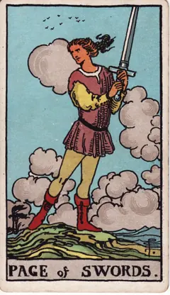
Valete de Espadas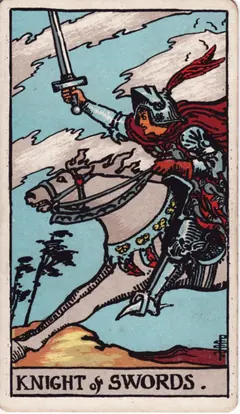
Cavaleiro de Espadas- Rainha de Espadas
- Rei de Espadas
Paus
Elemento Fogo. Energia, desejo, iniciativa e projetos que pedem coragem.
 Nove de Paus
Nove de Paus Valete de Paus
Valete de PausOuros
Elemento Terra. Trabalho, dinheiro, corpo e o que se constrói com paciência.
Nenhuma carta com esse nome ou tema.
Agora, a sua pergunta
No app, as cartas que saem para você são lidas à luz do que você perguntou.
Baixar grátis noGoogle Play- Grátis para baixar
- Carta do Dia grátis, todo dia
- 3 créditos de boas-vindas
- Sem anúncios